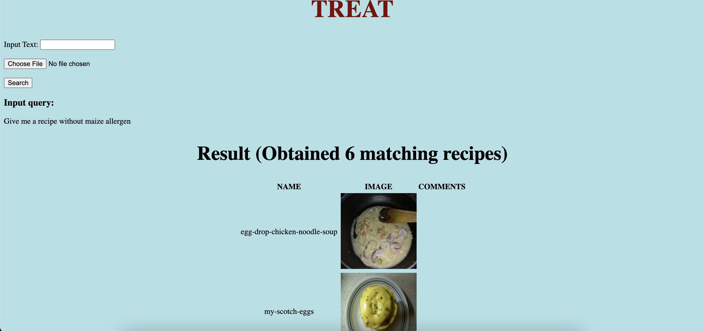
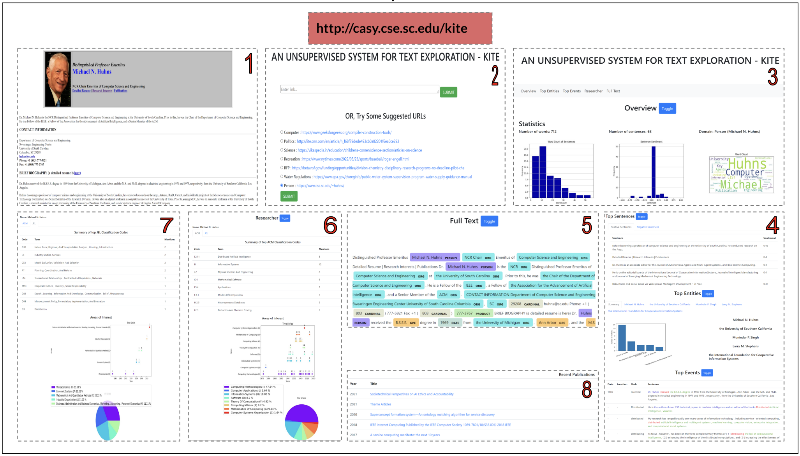
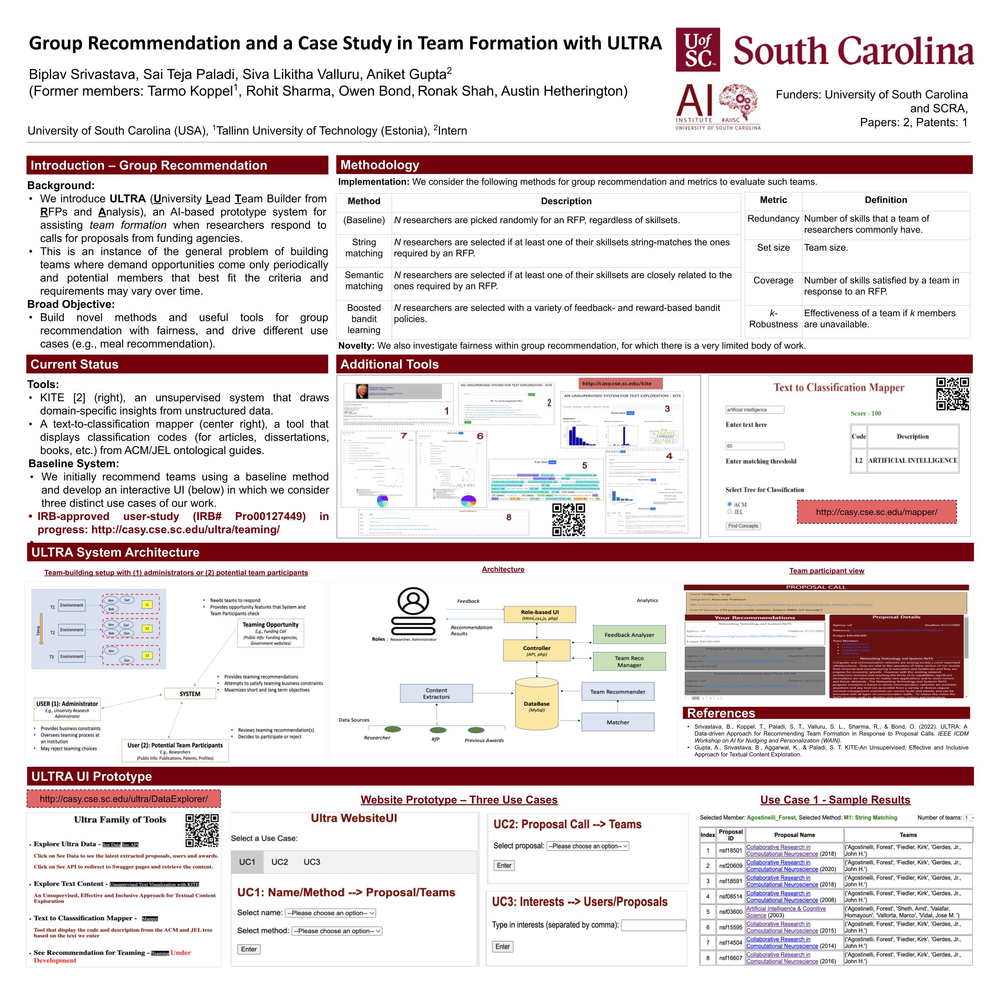

NEW! Our paper
that presents a novel system to recommend teams using a variety of AI methods has been accepted to IAAI-AAAI'2024 and will receive the Innovative
Application award.
NEW! Our demo
paper about deploying ULTRA
in two geographical regions of the world has been accepted to CODS-COMAD'2024.
We study the problem of group recommendation, an
information exploration
paradigm that retrieves interesting items for users based on their profiles and past
interactions/activities/history. Existing literature encourages using greedy methods, genetic and
heuristic
algorithms, topic diversification, and cost constraint bi-objective optimizations. Our objective is to
build
novel methods and useful tools for group recommendation with fairness, and drive different use cases
(e.g.,
meal recommendation).
The underlying research directions and applications are summarized in the
poster to the right (can be enlarged).
×
Figure 1: Teaming setup of ULTRA. Figure 2: System architecture of ULTRA.
Cooking domain is a popular use-case to demonstrate decision-support (AI) capabilities in service of benefits
like precision health with tools ranging from information retrieval interfaces to task-oriented chatbots.
The recipes today are handled as textual documents which makes it difficult for machines to read, reason and handle ambiguity.
This demands a need for better representation of the recipes, overcoming the ambiguity and sparseness that exists in the current textual documents.
We constructed a machine-understandable rich recipe representation (R3), in the form of plans, from the recipes available in natural language.
R3 is infused with additional knowledge such as information about allergens and images of ingredients, possible failures and tips for each atomic cooking step.
To show the benefits of R3, we also built TREAT, a tool for recipe retrieval which uses R3 to perform multi-modal reasoning on the recipe's content
(plan objects - ingredients and cooking tools), food preparation process (plan actions and time), and media type (image, text).
R3 leads to improved retrieval efficiency and new capabilities that were hither-to not possible in textual representation.
Representative Publications
[2022] A Rich Recipe Representation as Plan to Support Expressive Multi-Modal Queries
on Recipe Content and Preparation Process
2022 Workshop on Knowledge Engineering for Planning and Scheduling [Paper][BibTex]
[2022] A Multi-Modal Decision Support System with Allergy-Aware Recipe Understanding Powered by a Plan Representation
[BibTex]
Figure 3: Difference between textual representation and R3 for a single instruction.

Figure 4: Result of user query of asking recipes containing
bacon.
Here, we describe some of the important tools that we have developed as part of the ULTRA
effort. They started out as useful features that we then made into stand-alone capabilities recognizing
their potentia for wider usage:
KITE (right) is an
unsupervised system for exploring textual
data which can generate insights from a general as well as a domain-dependent perspective consisting of
holistic views, entity-centric view, events view, domain-specific interpretation using industry
taxonomies and a detailed full-text view transparently connecting the document to insight elements.
We introduce ULTRA (University
Lead Team
Builder from RFPs and Analysis), an novel AI-based system for
assisting team formation when researchers respond to RFPs from funding agencies. This is an instance of
the
general problem of building teams when demand opportunities come periodically and potential members may
vary
over time. The novelties of our approach are that we: (a) extract technical skills needed about
researchers
and calls from multiple open data sources and normalize them using NLP techniques, (b) build
teaming
solutions based on constraints, (c) computationally and qualitatively evaluate our system in two diverse
settings (US, India) to establish generality of our approach, and (d) create and publish a dataset that
others can use.
(This research study has been certified as exempt
from
the IRB per 45 CFR 46.104(d)(3) and 45 CFR 46.111(a)(7) by University of South Carolina
IRB#Pro00127449.)
Representative Publications
[2024] Promoting Research Collaboration with Open Data Driven Team Recommendation in Response to
Call
for Proposals
The Thirty-Sixth Annual Conference on Innovative Applications of Artificial Intelligence
(IAAI-24) [Tool Websites at UofSC, IIT-R][Demo Videos for UofSC,
IIT-R][Paper][BibTex]
[2024] ULTRA: Exploring Team Recommendations in Two Geographies Using Open Data in Response to Call
for
Proposals.
ACM India Joint International Conference on Data Science and Management of Data
(CODS-COMAD-2024) [Paper][BibTex]
[2022] ULTRA: A Data-driven Approach for Recommending Team Formation in Response to Proposal Calls.
IEEE ICDM Workshop on AI for Nudging and Personalization (WAIN) [Paper][BibTex]
Figure 1: Teaming setup of ULTRA. Figure 2: System architecture of ULTRA.
Here, we describe some of the important tools that we have developed as part of the ULTRA
effort. They started out as useful features that we then made into stand-alone capabilities recognizing
their potentia for wider usage:
KITE (right) is
an
unsupervised system for exploring textual
data which can generate insights from a general as well as a domain-dependent perspective consisting
of
holistic views, entity-centric view, events view, domain-specific interpretation using industry
taxonomies and a detailed full-text view transparently connecting the document to insight elements.
We also developed a text-to-classification
mapper, a tool that takes the input
as a text and matching threshold as a number and returns the ACM or JEL
classification
codes and description based on the input text.
We extend the problem of group recommendation to another use case: meal recommendation. Food is a crucial source for a person’s sustenance, health, and happiness. As a result, a person will benefit from affordable experts (e.g., dieticians) and decision-support technologies (e.g., Artificial Intelligence recommenders) that could help them select meals that they like and are nutritious. This is especially pertinent when the person begins to face a life-long health condition (e.g., diabetes) and has to consider a variety of foods that constitute one or more meals in a day. However, in the absence of a timely, continual, and cost-effective help option to select meals, the person is often unwillingly forced to make hard meal choices, that are often fixed and repeated, between nutrition and taste. It is common to see a person choose healthy food quite late when they have already become a late-stage patient (e.g., diabetes), and the new forced meal plans adversely impact their mental health and happiness.